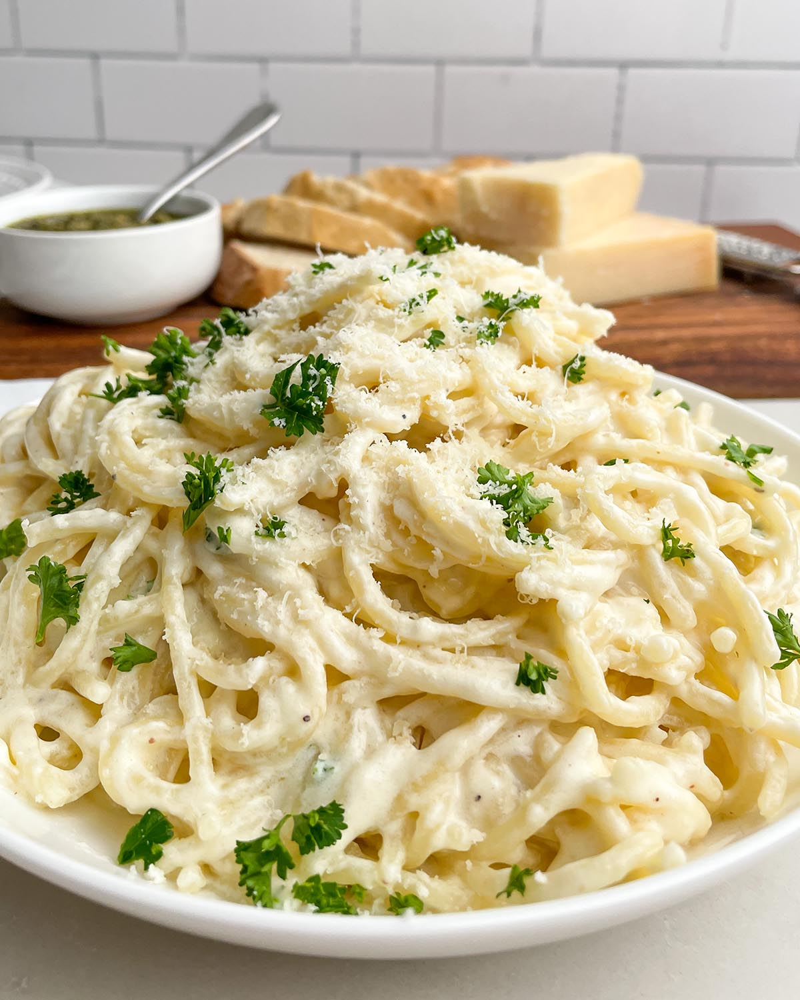

Chicken Alfredo w/out the Chicken

Description
Chicken Alfredo is a very nice dish indeed. It is very delicious and delightful, but there's a twist with this one.
IT DONT GOT NO CHICKEN IN IT!
Ingredientes
- No Chicken
- Pasta (preferablly RigaTONY)
- Alfredo Pasta Sauce
- Your mother's shattered heart
- Salt
Steps for Preparation
- Fill a saucepan with 5qt water
- Bring water to boil
- Pour pasta into boiling water
- Let cook for 7-10 minutes
- Strain Pasta
- Heat sauce in saucepan
- Season sauce, add pasta back
- Simmer for 3-5 minutes
- Break your mother's heart
- Listen to your mother